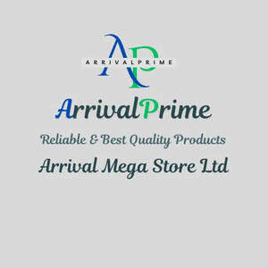

Trade Mark Journal No.2025/039 26 September 2025
UK00004263619 12 September 2025 (14,16,18,21,28)

- Class 14
- Watches; Chronographs for use as watches; Chronographs as watches; Chronographs [watches]; Dials for watches; Clocks and watches; Watches and clocks; Wrist watches; Bracelets for watches; Quartz watches; Straps for watches; Wristlet watches; Sports watches; Movements for clocks and watches; Movements for watches and clocks; Pendant watches; Alarm watches; Faces for watches; Pocket watches; Diving watches; Silver watches; Housings for clocks and watches; Mechanical watches; Parts for watches; Chains for watches; Cases for watches and clocks; Automatic watches; Dress watches; Oscillators for watches; Electronic watches; Bands for watches; Watches for nurses; Women's watches; Solar watches; Watch cases [parts of watches]; Fittings for watches; Wrist straps for watches; Straps for wrist watches; Cases for watches; Electric watches; Stop watches; Clocks and watches, electric; Table watches; Clocks and watches for pigeon-fanciers; Platinum watches; Divers' watches; Watch dials; Bracelets and watches combined; Wristwatches; Watches made of gold; Watches for sporting use; Timepieces; Watch bracelets; Presentation boxes for watches; Chronographs for use as timepieces; Cases [fitted] for watches; Watches bearing insignia; Watch glasses; Watch fobs; Watch winders; Dials [clock and watch making]; Dials for clock and watch making; Watch clasps; Parts and fittings for watches; Digital watches with automatic timers; Cases for watches [presentation]; Electronically operated movements for watches; Watches for outdoor use; Watch movements; Straps for wristwatches; Watches made of precious metals; Watch straps; Cases of precious metals for watches; Electrically operated movements for watches; Watches made of plated gold; Watch and clock springs; Clock and watch hands; Watch and clock hands; Watch boxes; LED finger ring watches; Watches containing a game function; Anchors [clock and watch making]; Watch faces; Pendulums [clock and watch making]; Wristwatches with pedometers; Watch pouches; Mechanical watches with manual winding; Watches made of rolled gold; Mechanical watches with automatic winding; Cases adapted for holding watches; Wrist watch bands; Watch crowns; Watch chains; Chains (Watch -); Dials for clock and watch-making; Watch casings; Barrels [clock and watch making]; Watch parts; Leather watch straps; Watch hands; Dials [clock- and watchmaking]; Hands (Clock -) [clock and watch making]; Clock hands [clock and watch making]; Dials for clock- and watchmaking; Watches incorporating a telecommunication function; Dials for horological articles; Jewellery boxes and watch boxes; Pendants for watch chains; Dials for clocks; Watch straps of plastic; Watches incorporating a memory function; Watchbands; Watch crystals; Watch springs; Springs (Watch -); Cases adapted to contain watches; Clocks having quartz movements; Non-leather watch straps; Dials (clockmaking and watchmaking); Watch bands; Watch cases; Wristwatches with pedometer feature; Horological instruments having quartz movements; Electrical timepieces; Oscillators for timepieces; Metal expanding watch bracelets; Electronic timepieces; Quartz clocks; Watches made of precious metals or coated therewith; Electric timepieces; Watches with the function of wireless communication; Watches with wireless communication function; Mechanical watch oscillators.
- Class 16
- Stationery; Envelopes [stationery]; Paper stationery; Printed stationery; Stickers [stationery]; Office stationery; Stencils [stationery]; Wrappers [stationery]; Stationery boxes; Binders [stationery]; Folders [stationery]; Stationery folders; Office paper stationery; Writing stationery; Scented stationery; Adhesives for stationery; Paper folders [stationery]; Pads [stationery]; Thumbtacks [stationery]; Transparencies [stationery]; Party stationery; Pencil ornaments [stationery]; Pencil ornaments (stationery); Files [stationery]; Protractors [for stationery and office use]; Envelopes for stationery use; School supplies [stationery]; Copying paper [stationery]; Seals [stationery]; Covers [stationery]; Stationery and educational supplies; Marking pens [stationery]; Paper sheets [stationery]; Pocket books [stationery]; Pins [stationery]; Clips for paper [stationery]; Announcement cards [stationery]; Manifolds [stationery]; Cases for stationery; Stationery cases; Index cards [stationery]; Glitter pens for stationery purposes; Stationery (Cabinets for -) [office requisites]; Cabinets for stationery [office requisites]; Document holders [stationery]; Glitter for stationery purposes; Adhesives for stationery purposes; Glue pens for stationery purposes; Writing cases [stationery]; Desktop cabinets for stationery [office requisites]; Adhesive pads [stationery]; Tapes (adhesive -) [stationery]; Self-adhesive tapes for stationery and household purposes; Self-adhesive tapes for stationery or household purposes; Adhesives for stationery or household purposes; Adhesive foils stationery; Felt mats for Chinese calligraphy (stationery); Plantable seed paper [stationery]; Document files [stationery]; Marking inks for stationery purposes; Pastes for stationery or household purposes; Organizers for stationery use; Label printing machines for household and stationery use; Self-adhesive tapes for stationery use; Adhesives for stationery or household use; Adhesives for stationery and household use; Glue for stationery or household purposes; Document holders being articles of stationery; Gummed tape [stationery]; Paste for stationery or household purposes; Adhesive tapes for stationery or household purposes; Gummed cloth for stationery purposes; Adhesive tapes for stationery purposes; Rubber bands [stationery]; Pastes and other adhesives for stationery or household purposes; Seaweed glue for stationery; Plastic adhesives for stationery or household purposes; Notepads; Rubber cements for stationery; Gelatine glue for stationery or household purposes; Glue for stationery or household use; Gluten [glue] for stationery or household purposes; Isinglass for stationery or household purposes; Gums [adhesives] for stationery or household purposes; Adhesive bands for stationery purposes; Gum arabic glue for stationery or household purposes; Spirit gum for stationery purposes; Paper embossers [office requisites]; Glitter glue for stationery purposes; Latex glue for stationery or household purposes; Notepaper; Letterhead paper; Letterheads; Adhesive tape for stationery purposes; File pockets for stationery use; Adhesives [glues] for stationery or household purposes; Adhesive tape cutters being stationery; Starch paste for stationery; Adhesive tape dispensers for household or stationery use; Paper envelopes for packaging; Wood pulp board [stationery]; Automatic paper clip dispensing machines for office or stationery use; Printed paper invitations; Reinforced stationery tabs.
- Class 18
- Bags; Tote bags; Luggage bags; Duffle bags; Duffel bags; Carry-on bags; Toiletry bags; Bags for clothes; Drawstring bags; Carry-all bags; Belt bags and hip bags; Nose bags [feed bags]; Bags (Nose -) [feed bags]; Carrying bags; Grocery tote bags; Cross-body bags; Bags for umbrellas; Luggage, bags, wallets and other carriers; Diaper bags; Crossbody bags; Cloth bags; Bucket bags; Leather bags; Nappy bags; Sling bags; Canvas bags; Duffel bags for travel; Belt bags; Shoe bags; Clutch bags; Wheeled bags; Kit bags; Messenger bags; Travel bags; Bags for travel; Garment bags; Souvenir bags; Leather bags and wallets; Toilet bags; Shoulder bags; Make-up bags; Cosmetic bags; Waterproof bags; Reusable shopping bags; Umbrella bags; Makeup bags; Towelling bags; Camping bags; Courier bags; Bags for campers; Bags for carrying pets; Knitted bags; Gym bags; Roll bags; Bags [envelopes, pouches] of leather, for packaging; Bags [envelopes, pouches] for packaging of leather; Bags [envelopes, pouches] of leather for packaging; Hand bags; Travelling bags; Cabin bags; Attaché bags; Flight bags; Overnight bags; Traveling bags; Beach bags; Bags for climbers; Mesh shopping bags; Mesh bags for shopping; Boot bags; Leather shopping bags; Canvas shopping bags; Knitting bags; Hiking bags; Bum bags; Frames for bags [structural parts of bags]; Suit bags; Roller bags; Wash bags for carrying toiletries; Nose bags; Baby carrying bags; Hunting bags; Feed bags; Gladstone bags; Waist bags.
- Class 21
- Kitchen utensils; Household or kitchen utensils; Kitchen graters; Kitchen jars; Kitchen containers; Spatulas [kitchen utensils]; Kitchen mitts; Kitchen sponges; Kitchen sieves; Tenderizers [kitchen utensils]; Kitchen utensils of silicon; Turners (kitchen utensil); Moulds [kitchen utensils]; Molds [kitchen utensils]; Kitchen moulds; Household or kitchen containers; Bread-cases [for kitchen use]; Mixing spoons [kitchen utensils]; Spatulas for kitchen use; Graters for kitchen use; Presses (Garlic -) [kitchen utensils]; Garlic presses [kitchen utensils]; Ceramics for kitchen use; Egg separators [kitchen utensils]; Serving scoops [household or kitchen utensil]; Pestles for kitchen use; Kitchen mixers, non-electric; Kitchen paper racks; Defrosting trays for kitchen use; Tortilla presses, non-electric [kitchen utensils]; Turners for kitchen use; Kitchen paper dispensers; Containers for household or kitchen use; Kitchen grinders, non-electric; Aluminium moulds [kitchen utensils]; Toilet and bathroom cleaning utensils ; Kitchen boards for chopping; Scrapers (kitchen implements); Crushers for kitchen use, non-electric; Mortars for kitchen use; Cooking utensils; Basting spoons, for kitchen use; Spoons (Basting -), for kitchen use; Batter dispensers for kitchen use; Funnels for kitchen use; Cooking pots for use in microwave ovens; Kitchen cutting boards; Griddles [cooking utensils]; Chopping boards for kitchen use; Cutting boards for the kitchen.
- Class 28
- Toys, games, and playthings; Toys; Pinball games machines [toys]; Toys, games and playthings for pet animals; Puzzles [toys]; Games; Mobiles [toys]; Games consoles; Outdoor toys; Pinball games; Toys for sandpits; Ride-on toys; Toys and playthings for pets; Bowls [games]; Balls for games; Games (Balls for -); Whistles [toys]; Play mats for use with toy vehicles [playthings]; Marbles for games; Games (Marbles for -); Controllers for toys; Sandbox toys; Miniatures for use in games; Play mats incorporating infant toys [playthings]; Balls for playing games; Educational toys; Coin-operated games; Plush toys; Cuddly toys; Marbles for playing games; Arcade games; Toys for animals; Cards [games]; Sports games; Toys for pets; Noisemakers [toys]; Bath toys; Skittles [games]; Toys for use in perambulators; Table-top games; Scooters [toys]; Inflatable toys; Novelty toys for playing jokes; Model cars [toys or playthings]; Crib toys; Gloves for games; Toys for dogs; Hockey games; Wooden toys; Toys for babies; Play mats containing infant toys; Bouncing toys; Crib mobiles [toys]; Puzzle mats [toys]; Music box toys; Stuffed toys; Toys and playthings for pet animals; Toys for cats; Interactive gaming chairs for video games; Whack-a-mole toys for pets; Radio-controlled toys; Chess games; Pet toys; Tabletop basketball games; Models being toys; Electronic games; Toys in the form of puzzles; Boards games; Fidget toys; Bats for games; Action figures [toys or playthings]; Dice games; Balls for playing boules games; Low-friction game tables for playing hockey games; Toys for birds; Children's toys; Joysticks for video games; Pool cushions [games equipment]; Batting gloves [accessories for games]; Smart toys; Manipulative games; Portable games and toys incorporating telecommunication functions; Counters for games; Articles of clothing for toys; Costumes being childrens playthings; Rattles [toys]; Checkers [games]; Checkers games; Musical toys; Inflatable ride-on toys; Bathtub toys; Dart games; Plastic toys; Sketching toys; Action toys; Soft toys; Play mats for use with toy vehicles; Toys for infants; Cloth toys; Dog toys; Electronic toys; Backgammon games; Wind-up toys; Musical games; Modular toys; Miniature car models [toys or playthings]; Rocking toys; Go games; Tricycles for infants [toys]; Toy playsets; Drawing toys; Hand-held consoles for playing video games; Inflatable bath toys; Counters [discs] for games; Counters for games [discs]; Games (Counters [discs] for -); Water toys; Tabletop games and gambling devices; Parlor games; Money guns being toys; Windup toys; Developmental toys; Fluffy toys; Bladders of balls for games; Parlour games; Hand-held pinball games; Wheeled toys; Mechanical games; Pistols (Caps for -) [toys]; Caps for pistols [toys]; Nets for ball games.
Arrival Mega Store Ltd